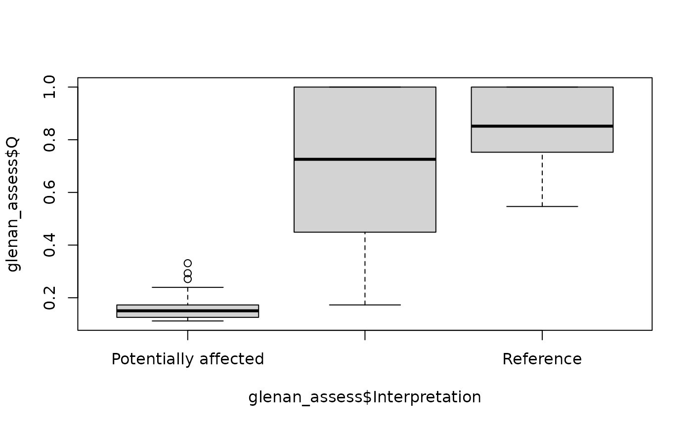

EcologicalStatus.RmdLoad GLOMEL data set
data(glomel)Subset compositional data matrix
glomel_comp <- as.matrix(glomel[,!(names(glomel) %in% c("ID", "Ref", "Complementary"))])
rownames(glomel_comp) <- glomel$IDBray-Curtis distance
glomel_bc <- vegan::vegdist(glomel_comp, method = "bray")Get reference station IDs
glomel_env <- glomel$ID[glomel$Ref]
glomel_assess <- compareToStateEnvelope(glomel_bc, glomel_env, m=1.5)Add interpretation
glomel_assess$Interpretation <- glomel$Complementary
glomel_assess## Observation Envelope Q
## 1 1A TRUE 1.00000000
## 2 1B TRUE 0.76613763
## 3 1C TRUE 0.57229876
## 4 5A TRUE 1.00000000
## 5 13 TRUE 0.81917760
## 6 2 FALSE 0.58055183
## 7 3A FALSE 0.43311585
## 8 3B FALSE 1.00000000
## 9 3C FALSE 0.45442188
## 10 5B FALSE 0.33022033
## 11 6A FALSE 0.05927157
## 12 6C FALSE 0.38424518
## 13 6D FALSE 0.04056616
## 14 7A FALSE 0.06641490
## 15 8A FALSE 0.18922894
## 16 8B FALSE 0.14419258
## 17 8C FALSE 0.02968524
## 18 9 FALSE 0.12972756
## 19 10 FALSE 0.76985523
## 20 11 FALSE 0.57670446
## 21 12 FALSE 1.00000000
## 22 14A FALSE 0.65528979
## 23 14B FALSE 0.13022565
## Interpretation
## 1 stade plus développé bon état de conservation
## 2 stade plus jeune bon état de conservation
## 3 Ilot de sénescence Bon état de conservation
## 4 lande sans ligneux plus de callune que de 4 angles plutôt bon état mais un peu vieux
## 5 plus humide et plus agé moins de ciliaris
## 6 Bon état de conservation équivalent à 1B
## 7 Bon état de conservation équivalent à 1B
## 8 Bon état de conservation équivalent à 1A et 1C
## 9 Dynamique progressive Mauvais état de conservation
## 10 ligneux et ajoncs début de dégradation
## 11 moins de bruyère peu de callune dégradé à Bourdaine
## 12 bas parcelle paturée dégradé par surpaturage
## 13 surpaturage important destructuré dégradé
## 14 paturé un peu ligneux
## 15 un peu dégradée mais AD molinnie ericacée correcte
## 16 Ligneux et landes fauche 2019
## 17 Ptéridaie et landes attention drainage vs boulot et bourdaune
## 18 Fauche 2019 beaucoup de bois de sortie
## 19 Bon état de conservation
## 20 Etat moyen avec un peu de ligneux
## 21 OK
## 22 un peu de ligneux surtout en lisière
## 23 moins d'ajoncsRecalculate using confidence intervals
glomel_assess <- compareToStateEnvelope(glomel_bc, glomel_env, m=1.5, nboot.ci = 1000)
glomel_assess## Observation Envelope Q Lower_Q Upper_Q
## 1 1A TRUE 1.00000000 0.160890537 1.00000000
## 2 1B TRUE 0.76613763 0.056748772 1.00000000
## 3 1C TRUE 0.57229876 0.039662609 1.00000000
## 4 5A TRUE 1.00000000 0.176489721 1.00000000
## 5 13 TRUE 0.81917760 0.094218259 1.00000000
## 6 2 FALSE 0.58055183 0.043208754 1.00000000
## 7 3A FALSE 0.43311585 0.034040474 0.61617669
## 8 3B FALSE 1.00000000 0.304666502 1.00000000
## 9 3C FALSE 0.45442188 0.039620804 0.62790907
## 10 5B FALSE 0.33022033 0.036556643 0.62036822
## 11 6A FALSE 0.05927157 0.005494313 0.08174610
## 12 6C FALSE 0.38424518 0.027829702 0.84301971
## 13 6D FALSE 0.04056616 0.003264656 0.06036804
## 14 7A FALSE 0.06641490 0.005858523 0.09414612
## 15 8A FALSE 0.18922894 0.022748715 0.22798561
## 16 8B FALSE 0.14419258 0.012480635 0.21421941
## 17 8C FALSE 0.02968524 0.002423464 0.04428647
## 18 9 FALSE 0.12972756 0.011100347 0.18503995
## 19 10 FALSE 0.76985523 0.076288468 0.84382321
## 20 11 FALSE 0.57670446 0.043377389 0.81593809
## 21 12 FALSE 1.00000000 0.225911044 1.00000000
## 22 14A FALSE 0.65528979 0.048471495 0.92615016
## 23 14B FALSE 0.13022565 0.010463377 0.19355284
data(glenan)Subset compositional data matrix
glenan_comp <- as.matrix(glenan[,!(names(glenan) %in% c("Ref", "Group", "DistanceFromExtraction"))])Bray-Curtis distance
glenan_bc <- vegan::vegdist(glenan_comp, method = "bray")Get reference station IDs
glenan_env <- row.names(glenan)[glenan$Ref==1]
glenan_env## [1] "1" "2" "3" "4" "5" "6"
glenan_assess <- compareToStateEnvelope(glenan_bc, glenan_env, m=1.5, nboot.ci = 1000)
glenan_assess$Interpretation <- glenan$Group
glenan_assess$DistanceFromExtraction <- glenan$DistanceFromExtraction
glenan_assess## Observation Envelope Q Lower_Q Upper_Q Interpretation
## 1 1 TRUE 0.8971479 0.17096966 1.0000000 Reference
## 2 2 TRUE 0.8060224 0.18348323 1.0000000 Reference
## 3 3 TRUE 1.0000000 0.24327772 1.0000000 Reference
## 4 4 TRUE 0.7525722 0.13438066 1.0000000 Reference
## 5 5 TRUE 0.5465354 0.09369619 1.0000000 Reference
## 6 6 TRUE 1.0000000 0.30423948 1.0000000 Reference
## 7 7 FALSE 1.0000000 0.31812311 1.0000000 Potentially not affected
## 8 8 FALSE 0.4955592 0.10234789 0.7101618 Potentially not affected
## 9 9 FALSE 0.4972602 0.10974716 0.6865025 Potentially not affected
## 10 10 FALSE 0.6551259 0.14699739 0.9230901 Potentially not affected
## 11 11 FALSE 1.0000000 0.30717588 1.0000000 Potentially not affected
## 12 12 FALSE 1.0000000 0.23804463 1.0000000 Potentially not affected
## 13 13 FALSE 1.0000000 0.25458479 1.0000000 Potentially not affected
## 14 14 FALSE 0.4023181 0.09669015 0.4812991 Potentially not affected
## 15 15 FALSE 0.8271395 0.16269457 1.0000000 Potentially not affected
## 16 16 FALSE 0.2258377 0.04672902 0.2888686 Potentially not affected
## 17 17 FALSE 0.1728020 0.03564665 0.2164664 Potentially not affected
## 18 18 FALSE 0.7963415 0.16591575 1.0000000 Potentially not affected
## 19 19 FALSE 0.2344442 0.04713232 0.3006705 Potentially affected
## 20 20 FALSE 0.1681996 0.03603986 0.2096945 Potentially affected
## 21 21 FALSE 0.1210871 0.02343556 0.1516195 Potentially affected
## 22 22 FALSE 0.3311000 0.06161069 0.4468991 Potentially affected
## 23 23 FALSE 0.1201868 0.02369800 0.1547943 Potentially affected
## 24 24 FALSE 0.1195947 0.02327437 0.1533513 Potentially affected
## 25 25 FALSE 0.2932539 0.06330454 0.3516409 Potentially affected
## 26 26 FALSE 0.2710910 0.05838373 0.3312008 Potentially affected
## 27 27 FALSE 0.1717602 0.03556573 0.2127451 Potentially affected
## 28 28 FALSE 0.1222382 0.02551082 0.1599816 Potentially affected
## 29 29 FALSE 0.2394551 0.04694253 0.3259742 Potentially affected
## 30 30 FALSE 0.2349553 0.05136776 0.2877820 Potentially affected
## 31 31 FALSE 0.1402470 0.02941540 0.1782720 Potentially affected
## 32 32 FALSE 0.1582573 0.03280489 0.1996573 Potentially affected
## 33 33 FALSE 0.1251353 0.02583884 0.1637425 Potentially affected
## 34 34 FALSE 0.1244305 0.02446990 0.1522370 Potentially affected
## 35 35 FALSE 0.1727212 0.03517689 0.2217754 Potentially affected
## 36 36 FALSE 0.1326532 0.02735092 0.1669558 Potentially affected
## 37 37 FALSE 0.1256193 0.02419998 0.1578747 Potentially affected
## 38 38 FALSE 0.1435388 0.02870979 0.1780111 Potentially affected
## 39 39 FALSE 0.1677414 0.03487940 0.2140891 Potentially affected
## 40 40 FALSE 0.1204359 0.02362938 0.1480530 Potentially affected
## 41 41 FALSE 0.1118698 0.02103951 0.1375739 Potentially affected
## 42 42 FALSE 0.1286591 0.02583040 0.1575602 Potentially affected
## 43 43 FALSE 0.1491829 0.02973484 0.1900231 Potentially affected
## 44 44 FALSE 0.1466970 0.02953071 0.1872383 Potentially affected
## 45 45 FALSE 0.2136169 0.04487440 0.2614862 Potentially affected
## 46 46 FALSE 0.1540005 0.03176606 0.1988684 Potentially affected
## 47 47 FALSE 0.2178950 0.04058194 0.2772176 Potentially affected
## 48 48 FALSE 0.1518308 0.03161821 0.2017274 Potentially affected
## 49 49 FALSE 0.1345995 0.02811480 0.1737741 Potentially affected
## 50 50 FALSE 0.1681576 0.03631054 0.2106725 Potentially affected
## 51 51 FALSE 0.1474013 0.03075325 0.1928825 Potentially affected
## 52 52 FALSE 0.1525177 0.03295371 0.1903032 Potentially affected
## DistanceFromExtraction
## 1 4870.7185
## 2 4624.1689
## 3 4623.5219
## 4 4305.4678
## 5 4075.1672
## 6 4080.6292
## 7 3769.4910
## 8 3582.7601
## 9 3584.1683
## 10 3300.0228
## 11 3026.5201
## 12 2754.5731
## 13 2419.7073
## 14 2114.0219
## 15 1292.4532
## 16 606.5231
## 17 679.7869
## 18 934.9196
## 19 2519.9859
## 20 2193.0884
## 21 1899.2504
## 22 1877.6205
## 23 1679.8981
## 24 1565.9667
## 25 1569.5280
## 26 1377.4719
## 27 1323.8278
## 28 1202.6453
## 29 1074.1339
## 30 1091.1601
## 31 886.4168
## 32 797.2202
## 33 756.1461
## 34 595.7080
## 35 570.1667
## 36 486.3184
## 37 250.3599
## 38 627.8732
## 39 1152.4039
## 40 114.9553
## 41 107.7510
## 42 100.9700
## 43 158.3781
## 44 448.4847
## 45 528.7384
## 46 649.1970
## 47 1840.6956
## 48 306.6780
## 49 732.5250
## 50 269.1164
## 51 320.1823
## 52 713.4355
boxplot(glenan_assess$Q~ glenan_assess$Interpretation)